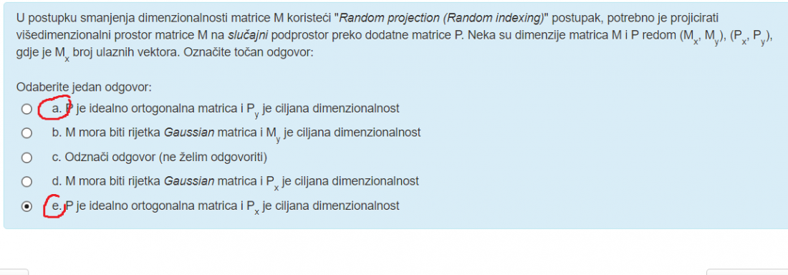

kako se u user-user CF-u računa ocjena rij ?
adrian7000 Bump, zna neko?
adrian7000 Ja mislim da s obzirom da je A dead end da onda samo staviš teleportirajuću poveznicu iz njega s vjerojatnošću 1
p13 znaci ovaj Beta koji je zadan u zadatku je potpuno nepotreban?
adrian7000 Mislim da taj beta tu služi za napisati matricu A
p13 mozes napisat onda kojim redom bi se to rijesavalo? Jer ja sam mislio da beta sluzi kad imamo spider trap.
adrian7000 iskreno nisam 100% sigurna, ali mislim da prvo u matrici M postaviš da su u stupcu A sve vrijednosti 1/N (odnosno tu ⅕) i onda normalno računaš matricu A prema onoj formuli sa slajda 42
p13 Da li se onda Google matrica računa iz te modificirane matrice M ili iz one koja je početno zadana (gdje nije riješen dead-end)?
Bobicki ja bih rekla iz modificirane jer onda imas ukljucena oba rjesenja - i spider trap i dead end also postoji ona izmijenjena jednadzba koja vrijedi za oboje
sretno
Bananaking također, ako što rješite i znate da je dobro podijelite s drugima 😁
gama Zna li netko 7. zadatak, cosine similarity, ocjene koje izostaju uzimamo 0 u računu?
Bananaking da, kje ti je rj?
Jacc sličnost utility matrice. Jesam lud ili nema odgovora ⅔?
Gwidoc
njima je rjesenje navodno 0.5, meni je isto ⅔ tak da ne razumijem kako
Netko simhash 122333444455555 TF-IDF = 1 + log10(tf)
zna netko kak se racuna precision i recall F1 score
enaiks 2PR/(P+R), 0.5 je rjesenje, jel je?
Ako je imao netko ovo, jel a) ili e) ? 
Bananaking Mislim da e
Bananaking For the record, odgovor je a) lol